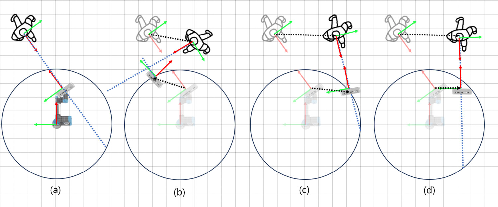
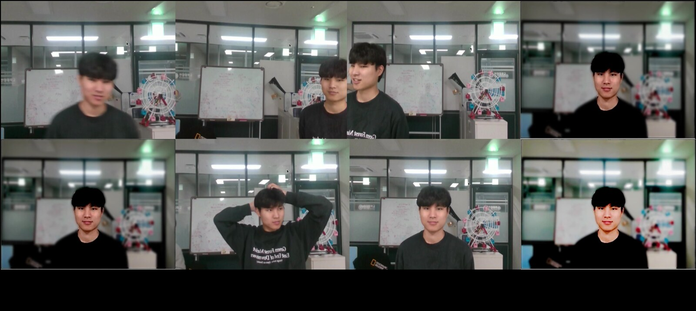

Abstract
Photography remains an expert area requiring the right focus, exposure, composition, and even post-processing. Yet robotic automation can enable precise camera manipulation, focus and exposure adjustment, camera composition, and post-processing by leveraging state-of-the-art computational photography. Existing proposals for robotic photography focus on adjusting camera angles for static portraits or developing image-evaluation metrics, thus falling short in capturing dynamic human-robot interactions. This paper describes the design and implementation of SnapBot, a human-robot interaction system designed specifically for computational photography. SnapBot dynamically detects face and pose for exposure and focus and interactively controls a robot arm for camera composition to perform image scoring and enhancing. As perception, control, and computational photography form an end-to-end pipeline, SnapBot promises a new future in which image focus, exposure, composition, and generation can be jointly optimized as a unified process. We implemented and deployed SnapBot on a UR3, demonstrating a mean image-quality score 1.51× that of the Aesthetic Visual Analysis (AVA) dataset. We also perform an ablation study to analyze the impact of each stage of SnapBot, both visually and quantitatively.
Method
SnapBot runs three stages end-to-end on a UR3 arm with an Intel RealSense D435 camera.
Perception. A YOLOv8-face detector finds the subject in each frame. SnapBot then sets exposure on the facial region, runs a deep autofocus model to recover sharpness, and estimates head pose in real time (2D landmark localization matched against 2,223 pre-built pose samples via quadtree search).
Control. From the perceived facial direction, SnapBot computes an optimal camera composition and drives the arm with a closed-loop, damped pseudo-inverse inverse-kinematics controller — robust near singularities — smoothed by a moving-average filter for stable motion.
Computational photography. An Image Score Model (ISM), trained on the AVA portrait dataset, ranks a burst of shots on aesthetic criteria and filters out poor frames; an Enhanced Image Generative Model (EIGM) then retouches the chosen image (exposure compensation, hue/saturation, tone mapping, gamma correction).

Camera composition. The camera moves in response to the subject's orientation and position: (a) the camera pose relative to the initial human pose; (b–d) composition variations as the subject moves.
Results
On a UR3, SnapBot reaches a mean image-quality score of 0.7852 versus 0.5189 for the AVA dataset — a 1.51× improvement. The ablation below shows that removing the Enhanced Image Generative Model (EIGM) and Image Score Model (ISM) degrades quality across every attribute.
| Method | Score | Balancing Elements | Depth of Field | Lighting | Object |
|---|---|---|---|---|---|
| AVA dataset | 0.5189 | 0.0341 | 0.1152 | 0.0568 | 0.0941 |
| SnapBot (full) | 0.7852 | 0.8085 | 0.7318 | 0.7799 | 0.6360 |
| SnapBot w/o EIGM | 0.5521 | 0.7002 | 0.5910 | 0.5832 | 0.4217 |
| SnapBot w/o ISM, EIGM | 0.3544 | −0.062 | 0.1144 | −0.1943 | −0.1030 |
Table 1. Mean image-quality score and per-attribute metrics (higher is better).

Component-wise comparison. (a) before/after autofocus; (b) a fixed camera vs. robot-arm composition; (c) before/after the Image Score Model (ISM); (d) before/after the Enhanced Image Generative Model (EIGM).
BibTeX
@inproceedings{choi2024snapbot,
author = {Choi, Chanyeok and Kim, Jeonghan and Nam, Yunjae and Lee, Youngmoon},
title = {Snapbot: Enabling Dynamic Human-Robot Interactions for
Real-Time Computational Photography},
booktitle = {Companion of the 2024 ACM/IEEE International Conference on
Human-Robot Interaction (HRI '24)},
year = {2024},
pages = {327--331},
address = {Boulder, CO, USA},
publisher = {Association for Computing Machinery},
doi = {10.1145/3610978.3640712}
}